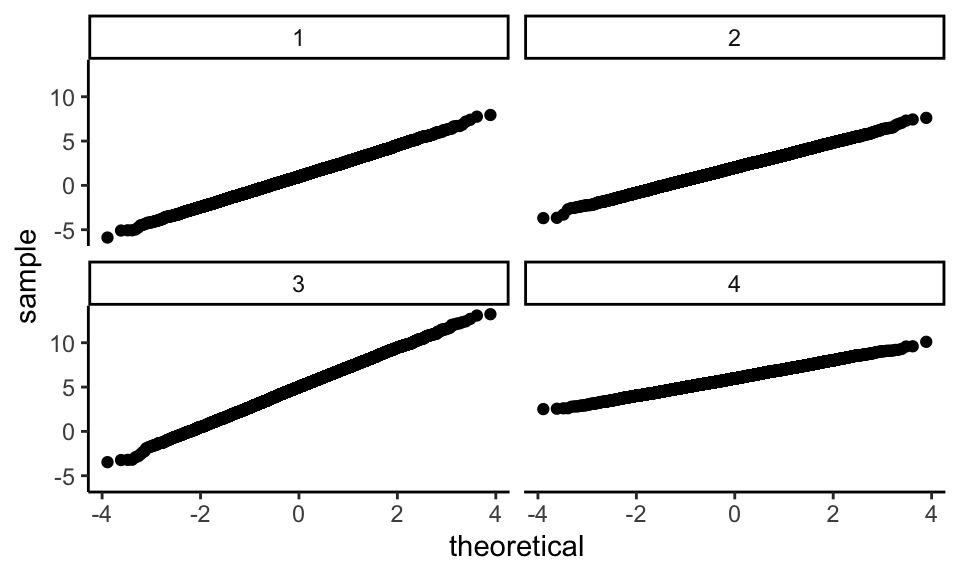

Chapter 6 Data-Generating Processes
The data generating process (DGP) is the recipe we use to create fake data that we then analyze. Often we express our DGP as a specific model, with parameters that we can set to generate data. The advantage of this is, generally, when we generate from a specified model we know the “right answer,” and can thus compare our estimates to this right answer in order to assess whether our estimation procedures worked.
The easiest way to describe a DGP is usually via a mathematical model, which is fundamentally a sequence of equations and random variables that define a series of steps. Describing DGPs in this way is especially important for more complex DGPs, such as those for hierarchical data. These models will often be a series of chained linear equations that use a set of parameters that we set out. Once we have them, we can convert these equations to code by simply following these laid out steps.
In this chapter, after giving a high level overview of the DGP process, we will walk through a running example of clustered data. In particular, we are going to focus on generating two-level data of students nested in schools.
There are several ingredients of a full mathematical model that we could use to generate data.
COVARIATES, STRUCTURAL COVARIATES, and OUTCOMES Covariates are the things that we are usually given when analyzing real data, such as student demographics, or school-level characteristics such as the school’s treatment assignment. Structural covariates are covariates that we do not tend to think of as covariates per se; they are more just consequences of the data. These are elements such as the number of observations in each school or proportion treated in each school.
In the real world statistical analysis, we rarely model covariates, but instead condition on them. In a simulation, however, we have to decide how they come to be.
Structural covariates are also a consequence of how we decide to generate data; for example, if we are generating sites of different size, we may put a distribution on site size, and generate the sizes according to that distribution.
Outcomes are a type of covariate that are usually dependent on other covariates in our model. In other words, some covariates depend on other covariates, which can govern the order that we can generate all of our data.
MODEL This is the parametric relationship between everything, such as a specification of how the outcomes are linked to the covariates. This includes specification of the randomness (the distribution of the residuals, etc.). The model will usually contain equations that one might see in an analysis of data that looks like what we are trying to generate.
The full model will also have some extra parts that define how to generate the covariates and structural covariates. For example, we might specify that site sizes are uniformly distributed between a specified minimum and maximum size, or that some covariate is normally distributed. We might also specify an equation that connects size size to site average treatment impact, or things of that nature.
PARAMETERS For a given model, parameters describe how strong a relationship there is between covariate and outcome, variance of the residuals, and so forth. We usually estimate these from data. Critically, if we know them, we can generate new data.
DESIGN PARAMETERS Design parameters are the parameters that go with the parts of our model that we normally would not use when analyzing our data. These are, e.g., the number of sites, the range of allowed site sizes. These will control how we generate the structural covariates. We might also have parameters governing covariate generation, such as means and variances and so forth.
For example, for the Welch data earlier we have, for observation \(i\) in group \(g\), a mathematical representation of our data of:
\[ X_{ig} = \mu_g + \epsilon_{ig} \mbox{ with } \epsilon_{ig} \sim N( 0, \sigma^2_g ) \]
These math equations would also come along with specified parameter values (the \(\mu_g\), the \(\sigma^2_g\)), and the design parameter of the sample sizes \(n_g\).
6.1 A statistical model is a recipe for data generation
Once we have a recipe (our mathematical model), the next step is to translate it to code. In the real world:
- We obtain data, we pick a model, we estimate parameters.
- The data comes with covariates and outcomes.
- It also comes with sample size, sizes of the clusters, etc.
In the simulation world, by comparison:
- We pick a model, we decide how much data, we generate covariates, we pick the parameters, and then we generate outcomes.
- We need to decide how many clusters we have, how big the clusters are, etc.
- We have to specify how the covariates are made. This last piece is very different from real-world analysis.
In terms of code, a function that implements a data-generating model should have the following form:
generate_data <- function(parameters) {
# generate pseudo-random numbers and use those to
# make some data
return(sim_data)
}The function takes a set of parameter values as input, simulates random numbers and does calculations, and produces as output a set of simulated data. Again, there will in general be multiple parameters, and these will include not only the model parameters (e.g. the coefficients of a regression), but also sample sizes and other study design parameters. The output will typically be a dataframe, mimicking what data one would see in the “real world,” possibly augmented by some other latent (normally unobserved in the real world) values that we can use later on to assess whether the estimation procedures we are checking are close to the truth.
For example, from our Welch case study, we had the following method that generates grouped data with a single outcome.
generate_data <- function(mu, sigma_sq, sample_size) {
N <- sum(sample_size)
g <- length(sample_size)
group <- rep(1:g, times = sample_size)
mu_long <- rep(mu, times = sample_size)
sigma_long <- rep(sqrt(sigma_sq), times = sample_size)
x <- rnorm(N, mean = mu_long, sd = sigma_long)
sim_data <- tibble(group = group, x = x)
return(sim_data)
}Our function takes both parameters as we normally thing of them (mu, sigma_sq), and other values that we might not think of as parameters per-se (sample_size).
When simulating data, we have to specify quantities that we, when analyzing data, often have to take for granted.
6.2 Checking the data-generating function
An important part of programming in R—particularly when writing functions—is finding ways to test and check the correctness of your code. Thus, after writing a data-generating function, we need to consider how to test whether the output it produces is correct. How best to do this will depend on the data-generating process being implemented.
For the heteroskedastic ANOVA problem, one basic thing we could do is check that the simulated data from each group follows a normal distribution. By generating very large samples from each group, we can effectively check characteristics of the population distribution. In the following code, we simulate very large samples from each of the four groups, and check that the means and variances agree with the input parameters:
mu <- c(1, 2, 5, 6)
sigma_sq <- c(3, 2, 5, 1)
check_data <- generate_data( mu = mu, sigma_sq = sigma_sq,
sample_size = rep(10000, 4) )
chk <- check_data %>% group_by( group ) %>%
dplyr::summarise( n = n(),
mean = mean( x ),
var = var( x ) ) %>%
mutate( mu = mu,
sigma2 = sigma_sq ) %>%
relocate( group, n, mean, mu, var, sigma2 )
chk## # A tibble: 4 × 6
## group n mean mu var sigma2
## <int> <int> <dbl> <dbl> <dbl> <dbl>
## 1 1 10000 0.996 1 3.00 3
## 2 2 10000 1.99 2 2.01 2
## 3 3 10000 4.98 5 5.04 5
## 4 4 10000 5.99 6 1.01 1We are recovering our parameters.
We can also make some diagnostic plots to assess whether we have normal data (using QQ plots, where we expect a straight line if the data are normal):

We again check out. Here, these checks may seem a bit silly, but most bugs are silly—at least once you find them! It is easy for small things such as a sign error to happen once your model gets a bit more complex; even simple checks such as these can be quite helpful.
6.3 Example: Simulating clustered data
Generating data with complex structure can be intimidating, but if you set out a recipe for how the data is generated it is often not to bad to build that recipe up with code. We will next provide a more complex example with a case study of using simulation to determine best practices for analyzing data from a cluster-randomized RCT of students nested in schools.
Recent literature on multisite trials (where, for example, students are randomized to treatment or control within each of a series of sites) has explored how variation in the size of impacts across sites can affect how estimators behave, and what models we should use when there is impact variation (e.g., (miratrix2021applied?), Bloom et al. (2016)). We are going to extend this work to explore best practices for estimating treatment effects in cluster randomized trials.
Cluster randomized trials are randomized experiments where the unit of randomization is a group of individuals, rather than the individuals themselves. For example, if we have a collection of schools, with students in schools, a cluster randomized trial would randomize the schools into treatment or control, and then measure our outcome on the students inside the schools. We might be trying to estimate, for example, whether the average score of the treatment schools is different from the average score of the control schools. In particular, we want to investigate what happens when the average treatment impact of a school is related to the size of the school.
Often we will design a data generating process to allow us to answer a specific question. For our Welch example, we wanted to know how different amounts of variation in different groups impacted estimation. We therefore needed a data generation process that allowed us to control that variation. To figure out what we need for our clustered data example, we need to think about how we are going to use those data in our simulation study.
6.3.1 A design decision: What do we want to manipulate?
There are a lot of ways we might generate cluster randomized trial data. To pick between the many options, we need to think about the goals of the simulation.
Overall, our final data should be a collection of clusters with different sizes and different baseline mean outcomes. Some of the clusters will be treated, and some not. We can imagine our final data being individual students in schools, with each student having a school id, a treatment assignment (shared for all in the school) and an outcome. A good starting point for building a DGP is to first write down a sketch of what the eventual data might look like on a piece of scratch paper. In our case, for example, we might write down:
| schoolID | Z | size | studentID | Y |
|---|---|---|---|---|
| 1 | 1 | 24 | 1 | 3.6 |
| 1 | 1 | 24 | 3 | 1.0 |
| 1 | etc | etc | etc | etc |
| 1 | 1 | 24 | 24 | 2.0 |
| 2 | 0 | 32 | 1 | 0.5 |
| 2 | 0 | 32 | 2 | 1.5 |
| 2 | 0 | 32 | 3 | 1.2 |
| etc | etc | etc | etc | etc |
We know we are planning on comparing multiple estimators, seeing how they behave differently under different conditions. We also know that we are interested in what happens when the size of the treatment impact varies across sites, and in particular what happens when it is associated with site size.
Given these goals and beliefs, we might think:
- We figure if all the sites are the same size, then all the estimators will probably be ok. But if sites vary, then maybe we could have issues with our estimators.
- Also, if site size varies, but has nothing to do with impact, then all the estimators might still be ok, at least for bias, but if size is associated with treatment impact, then maybe how our estimators end up averaging across sites is going to matter.
Usually, when running a simulation, it is good practice to test the simple option along with the complex one. We want to both check that something does not matter as well as verify that it does. Given this, we land on the following points:
- We need a DGP that has the option to make all-same-size sites or variable size sites.
- Our DGP should have some impact variation across sites.
- Our DGP should allow for different sites to have different treatment impacts.
- We should have the option to connect impact variation to site size.
6.3.2 A model for a cluster RCT
It is usually easiest to start a recipe for data generating by writing down the mathematical model. Write down something, and then, if you do not yet know how to generate some part of what you wrote down, specify how to generate those parts that you are using, in an iterative process.
For our model, we start with a model for our student outcome:
\[ Y_{ij} = \beta_{0j} + \epsilon_{ij} \mbox{ with } \epsilon_{ij} \sim N( 0, \sigma^2_\epsilon ) \] where \(Y_{ij}\) is the outcome for student \(i\) in site \(j\), \(\beta_{0j}\) is the average outcome in site \(j\), and \(\epsilon_{ij}\) is the residual error for student \(i\) in site \(j\).
We then need to figure out how to make the average outcome in site \(j\). In looking at our goals, we want \(\beta_{0j}\) to depend on treatment assignment. We might then write down:
\[ \beta_{0j} = \gamma_0 + \gamma_1 Z_j + u_j \mbox{ with } u_j \sim N( 0, \sigma^2_u )\] saying the average outcome in site \(j\) is the average outcome in the control group (\(\gamma_0\)) plus some treatment impact (\(\gamma_1\)) if the site is treated. We added a \(u_j\) so that our different sites can be different from each other in terms of their average outcome, even if they are not treated. To keep things simple, we are having a common treatment impact within cluster: if we treat a cluster, everyone in the cluster is raised by some specified amount.
But we also want the size of impact to possibly vary by site size. This suggests we also want a treatment by site size interaction term. Instead of just using the site size, however, we are going to standardize our site sizes so they are more interpretable. This makes it so if we double the sizes of all the sites, it does not change our size covariate: we want the size covariate to be relative size, not absolute. To do this, we create a covariate which is the percent of the average site size that a site is: \[ S_j = \frac{n_j - \bar{n}}{ \bar{n} } \]
where \(\bar{n}\) is the average site size. Using this covariate, we then revise our equation for our site \(j\) to: \[ \beta_{0j} = \gamma_{0} + \gamma_{1} Z_j + \gamma_2 Z_j S_j + u_j \] A nice thing about \(S_j\) is that it is centered at 0, meaning the average site has an impact of just \(\gamma_1\). If \(S_j\) was not centered at zero, then our overall average impact in our data would be a mix of the \(\gamma_1\) and the \(\gamma_2\). By centering, we make it so the average impact is just \(\gamma_1\)–\(\gamma_1\) is our target site average treatment impact.
If we put all the above together, we see we have specified a multilevel model to describe our data: \[ \begin{aligned} Y_{ij} &= \beta_{0j} + \epsilon_{ij} \\ \epsilon_{ij} &\sim N( 0, \sigma^2_\epsilon ) \\ \beta_{0j} &= \gamma_{0} + \gamma_{1} Z_j + \gamma_2 Z_j S_j + u_j \\ u_j &\sim N( 0, \sigma^2_u ) \end{aligned} \] Our parameters are the mean outcome of control unit (\(\gamma_0\)), the average treatment impact (\(\gamma_1\)), the amount of cross site variation (\(\sigma^2_u\)), and residual variation (\(\sigma^2_\epsilon\)). Our \(\gamma_2\) is our site-size by treatment interaction term: bigger sites will (assuming \(\gamma_2\) is positive) have larger treatment impacts.
If you prefer the reduced form, it would be:
\[ Y_{ij} = \gamma_{0} + \gamma_{1} Z_j + \gamma_2 Z_j S_j + u_j + \epsilon_{ij} \] We might also include a main effect for \(S_j\). A main effect would make larger sites systematically different than smaller sites at baseline, rather than having it only be part of our treatment variation term. For simplicity we drop it here.
In reviewing the above, we might notice that we do not have any variation in treatment impact that is not explained by site size. We could once again revise our model to include a term for this, but we will leave it out for now. See the exercises at the end of the chapter.
So far we have a mathematical model analogous to what we would write if we were analyzing the data. To generate data, we also need several other quantities specified. First, we need to know the number of clusters (\(J\)) and the sizes of the clusters (\(n_j\), for \(j = 1, \ldots, J\)). We have to provide a recipe for generating these sizes. We might try
\[ n_j \sim unif( (1-\alpha)\bar{n}, (1+\alpha)\bar{n} ) = \bar{n} + \bar{n}\alpha \cdot unif(-1, 1) ,\] with a fixed \(\alpha\) to control the amount of variation in cluster size. If \(\bar{n} = 100\) and \(\alpha = 0.25\) then we would, for example, have sites ranging from 75 to 125 in size. This specification is nice in that we can determine two parameters, \(\bar{n}\) and \(\alpha\), to get our site sizes, and both parameters are easy to comprehend: average site size and amount of site size variation.
Given how we are generating site size, look again at our treatment impact heterogeneity term:
\[ \gamma_2 Z_j S_j = \gamma_2 Z_j \left(\frac{n_j - \bar{n}}{\bar{n}}\right) = \gamma_2 Z_j \alpha U_j, \] where \(U_j\) is the \(U_j \sim unif(-1,1)\) uniform variable used to generate \(n_j\). Due to our standardizing by average site size, we make our covariate not change in terms of its importance as a function of site size, but rather as a function of site variation \(\alpha\). In particular, \(\frac{n_j - \bar{n}}{\bar{n}}\) will range from \(-\alpha\) to \(\alpha\), regardless of average site size. Carefully setting up a DGP so the “knobs” we use are standardized like this can make interpreting the simulation results much easier. Consider if we did not standardize and just had \(\gamma_2 n_j\) in our equation: in this case, for a set \(\gamma_2\), the overall average impact would grow if we changed the average site size, which could make interpreting the results across scenarios very confusing. We generally want the parameters in our DGP to change only one aspect of our simulation, if possible, to make isolating effects of different DGP characteristics easier.
We next need to define how we generate our treatment indicator, \(Z_j\). We might specify the proportion \(p\) of clusters we will assign to treatment, and then generate \(Z_j = 1\) or \(Z_j = 0\) using a simple random sampling approach on our \(J\) clusters. We will see code for this below.
6.3.3 Converting our model to code
When sketching out our DGP mathematically we worked from the students to the schools. For actual data generation, we will now follow our final model, but go by layers in the other direction. First, we generate the sites:
- Generate site sizes
- Generate site-level covariates
- Generate site level random effects
Then we generate the students inside the sites:
- Generate student covariates
- Generate student residuals
- Add everything up to generate student outcomes
The mathematical model gives us exactly the details we need to execute on these steps.
We start by specifying a function with all the parameters we might want to pass it, including defaults for each (see A.2 for more on function defaults):
gen_dat_model <- function( n_bar = 10,
J = 30,
p = 0.5,
gamma_0 = 0, gamma_1 = 0, gamma_2 = 0,
sigma2_u = 0, sigma2_e = 1,
alpha = 0 ) {
# Code (see below) goes here.
}Note our parameters are a mix of model parameters (gamma_0, gamma_1, sigma2_e, etc., representing coefficients in regressions, variance terms, etc.) and design parameters (n_bar, J, p) that directly inform data generation.
We set default arguments (e.g., gamma_0=0) so we can ignore aspects of the DGP that we do not care about later on.
Inside the model, we will have a block of code to generate the sites, and then another to generate the students.
Make the sites. We make the sites first:
# generate site sizes
n_min = round( n_bar * (1 - alpha) )
n_max = round( n_bar * (1 + alpha) )
nj <- sample( n_min:n_max, J, replace=TRUE )
# Generate average control outcome and average ATE for all sites
# (The random effects)
u0j = rnorm( J, mean=0, sd=sqrt( sigma2_u ) )
# randomize units within each site (proportion p to treatment)
Zj = ifelse( sample( 1:J ) <= J * p, 1, 0)
# Calculate site intercept for each site
beta_0j = gamma_0 + gamma_1 * Zj + gamma_2 * Zj * (nj-n_bar)/n_bar + u0jThe code is a literal translation of the math we did before.
Note the line with sample(1:J) <= J*p; this is a simple trick to generate a treatment and control 0/1 indicator.
There is also a serious error in the above code (serious in that the code will run and look fine in many cases, but not always do what we want); we leave it as an exercise (see below) to find and fix it.
Make the individuals. We next use the site characteristics to then generate the individuals.
# Make individual site membership
sid = as.factor( rep( 1:J, nj ) )
dd = data.frame( sid = sid )
# Make individual level tx variables
dd$Z = Zj[ dd$sid ]
# Generate the residuals
N = sum( nj )
e = rnorm( N, mean=0, sd=sqrt( sigma2_e ) )
# Bundle and send out
dd <- mutate( dd,
sid=as.factor(sid),
Yobs = beta_0j[sid] + e,
Z = Zj[ sid ] )A key piece here is the rep() function that takes a list and repeats each element of the list a specified number of times.
In particular, rep() repeats each number (\(1, 2, /ldots,J\)), the corresponding number of times as listed in nj.
Once we put the above code in our function skeleton, we can our function as so:
dat <- gen_dat_model( n_bar = 5, J=3, p = 0.5,
gamma_0 = 0, gamma_1 = 0.2, gamma_2 = 0.2,
sigma2_u = 0.4, sigma2_e = 1,
alpha = 0.5 )
dat## sid Z Yobs
## 1 1 1 0.776953794
## 2 1 1 -0.007218711
## 3 1 1 0.292033611
## 4 1 1 -0.971344824
## 5 1 1 -0.553448559
## 6 2 0 1.174974987
## 7 2 0 0.052906424
## 8 3 0 0.844204532
## 9 3 0 -1.019060761
## 10 3 0 -1.693720092
## 11 3 0 -0.760304217
## 12 3 0 0.481981528
## 13 3 0 -1.636520240Our data generation code is complete.
We can control the average size of the clusters (n), the number of clusters (J), the proportion treated (p), the average outcome in the control group (gamma_0), the average treatment effect (gamma_1), the site size by treatment interaction (gamma_2), the amount of cross site variation (sigma2_u), the residual variation (sigma2_e), and the amount of site size variation (alpha).
The next step is to test the code, making sure it is doing what we think it is.
In fact, it is not–there is a subtle bug that only appears under some specifications of the parameters; see the exercises for more on testing ones code, and for diagnosing and repairing this error in particular.
6.4 Extension: Standardization in a data generating process
In this chapter, we made a model to generate data for a cluster randomized trial. Given our model, we can generate data by specifying our parameters and variables of \(\gamma_{0}, \gamma_{1}, \gamma_{2}, \sigma^2_\epsilon, \sigma^2_u, \bar{n}, \alpha, J, p\).
One factor that tends to show up when working with multisite data is how much variation there is within sites vs between sites. For example, the Intra-Class Correlation (ICC), a measure of how much of the variation in the outcome is due to differences between sites, is a major component for power calculations. Because of this, we will likely want to manipulate the amount of within vs. between variation in our simulations.
An easy way to do this would be to simply raise or lower the amount of variation within sites (\(\sigma^2_u\)). This unfortunately has a side effect: if we increase \(\sigma^2_u\), our overall variation of \(Y\) will also increase. This will make it hard to think about, e.g., power, since we have confounded within vs. between variation with overall variation (which is itself bad for power). It also impacts interpretation of coefficients. A treatment effect of 0.2 on our outcome scale is “smaller” if there is more overall variation.
Right now, our model is \[ Y_{ij} = \gamma_{0} + \gamma_{1} Z_j + \gamma_2 Z_j \left(\frac{n_j - \bar{n}}{\bar{n}} \right) + u_j + \epsilon_{ij} \]
Given our model, the variance of our control-side outcomes is \[ \begin{aligned} var( Y_{ij}(0) ) &= var( \beta_{0j} + \epsilon_{ij} ) \\ &= var( \gamma_{0} + \gamma_{1} Z_j + \gamma_{2}Z_j \tilde{n}_j + u_j + \epsilon_{ij} ) \\ &= var( \gamma_{0} + u_j + \epsilon_{ij} ) \\ &= \sigma^2_u + \sigma^2_\epsilon \end{aligned} \] (We drop the terms with the \(Z_j\) because we are looking at control-side variation, where nothing is treated.) We see that as we increase either within or between variation, overall variation increases.
We can improve our data generating process to allow for directly controlling the amount of within vs. between variation without it being confounded with overall variation. To do this we first (1) Standardize our data and then (2) reparameterize, so we have human-selected parameters that we can interpret that we then translate to our list of data generation parameters. In particular, we will index our DGP with the more interpretable parameter of the Intra-Class Correlation (ICC), and standardize our DGP so it is all in effect size units.
The effect size of an impact is defined as the impact over the control-side standard deviation. (Sometimes people use the pooled standard deviation, but this is usually a bad choice if one suspects treatment variation. More treatment variation should not reduce the effect size for the same absolute average impact.)
\[ ES = \frac{\gamma_1}{SD( Y | Z_j = 0 )} = \frac{\gamma_1}{\sqrt{ \sigma^2_u + \sigma^2_\epsilon } } \]
The way we think about how “big” \(\gamma_1\) is depends on how much site variation and residual variation there is. But it is also easier to detect effects when the residual variation is small. Effect sizes “standardize out” these sorts of tensions. We can use that.
In particular, we will use the Intraclass Correlation Coeffiicent (ICC), defined as \[ ICC = \frac{ \sigma^2_u }{ \sigma^2_\epsilon + \sigma^2_u } . \] The ICC is a measure of within vs. between variation.
What we then do is first standardized our data, meaning we ensure the control side variance equals 1. Using the above, this means \(\sigma^2_u + \sigma^2_\epsilon = 1\). It also gives us \(ICC = \sigma^2_u\), and \(\sigma^2_\epsilon = 1 - ICC\).
Our two model parameters are now tied together by our single ICC tuning parameter. The core idea is we can now manipulate the aspects of the DGP we want while holding other aspects of the DGP constant. Given our standardized scale, we have dropped a parameter from our set of parameters we might want to vary, and ensured that varying the other parameter (now the ICC) is varying only one aspect of the DGP, not both. Before, increasing \(\sigma^2_u\) had two consequences: total variation and relative amount of variation at the school level. Now, manipulating ICC only does the latter.
E.g., we can call our DGP function as follows:
6.5 Exercises
6.5.1 The Welch test on a shifted-and-scaled \(t\) distribution
The shifted-and-scaled \(t\)-distribution has parameters \(\mu\) (mean), \(\sigma\) (scale), and \(\nu\) (degrees of freedom). If \(T\) follows a student’s \(t\)-distribution with \(\nu\) degrees of freedom, then \(S = \mu + \sigma T\) follows a shifted-and-scaled \(t\)-distribution.
The following function will generate random draws from this distribution (the scaling of \((\nu-2)/\nu\) is to account for a non-scaled \(t\)-distribution having a variance of \(\nu/(\nu-2)\)).
r_tss <- function(n, mean, sd, df) {
mean + sd * sqrt( (df-2)/df ) * rt(n = n, df = df)
}
r_tss(n = 8, mean = 3, sd = 2, df = 5)## [1] 2.1573751 3.5381963 4.3321615 0.9812902
## [5] 4.3675072 5.2172568 -2.1179124 6.2531454Modify the Welch simulation’s
simulate_data()function to generate data from shifted-and-scaled \(t\)-distributions rather than from normal distributions. Include the degrees of freedom as an input argument. Simulate a dataset with low degrees of freedom and plot it to see if you see a few outliers.Now generate more data and calculate the means and standard deviations to see if they are correctly calibrated (generate a big dataset to ensure you get reliable mean and standard deviation estimates). Check
dfequal to 500, 5, 3, and 2.Once you are satisfied you have a correct DGP function, re-run the Type-I error rate calculations from the prior exercises in Section 5.5 using a \(t\)-distribution with 5 degrees of freedom. Do the results change substantially?
6.5.2 Checking and extending the Cluster RCT DGP
What is the variance of the outcomes generated by our model if there is no treatment effect? (Try simulating data to check!) What other quick checks can you make on your DGP to make sure it is working?
In
gen_dat_model()we have the following line of code to generate the number of individuals per site.
This code has an error. Generate a variety of datasets where you vary n_min, n_max and J to discover the error. Then repair the code.
Checking your data generating process across a range of scenarios is extremely important.
The DGP allows for site-level treatment impact variation–but only if it is related to site size. How could you modify your simulation to allow for site-level treatment impact variation that is not related to site size? Implement this change and generate some data to show how it works.
Extend the data generating process to include an individual level covariate \(X\) that is predictive of outcome. In particular, you will want to adjust your level one equation to
\[ Y_{ij} = \beta_{0j} + \beta_{1} X_{ij} + \epsilon_{ij} . \] Keep the same \(\beta_1\) for all sites. You will have to specify how to generate your \(X_{ij}\). For starters, just generate it as a standard normal, and do not worry about having the mean of \(X_{ij}\) vary by sites unless you are excited to try to get that to work.